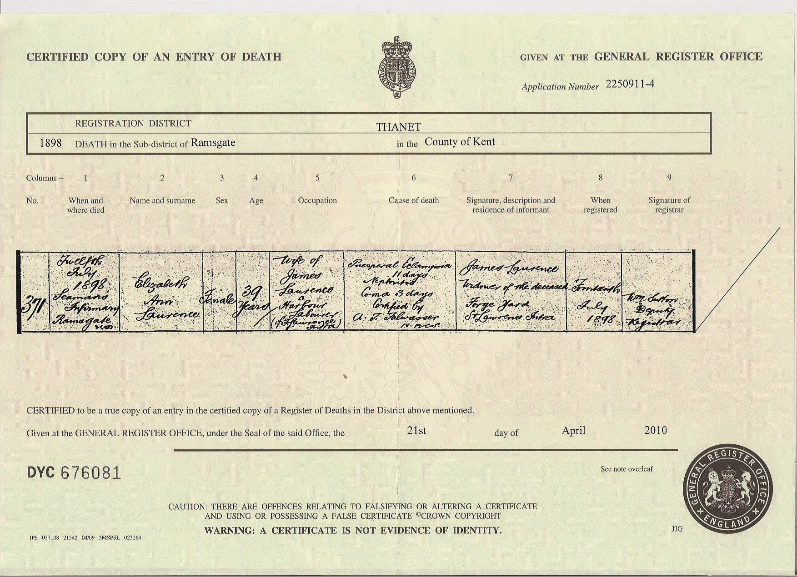
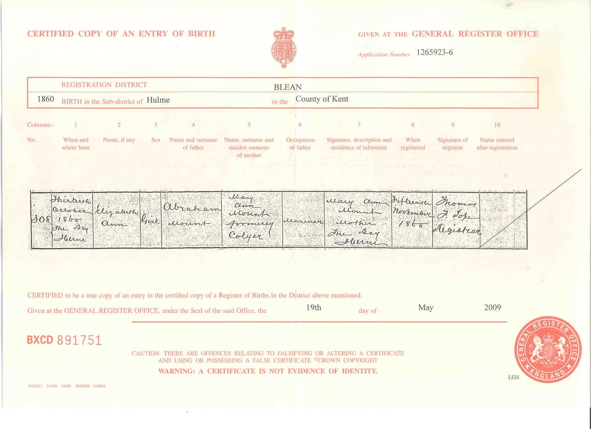
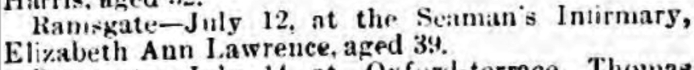
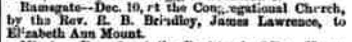
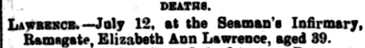

Elizabeth Ann Lawrence (née Mount) 1860 - 1898
[ Home ] | [ Calendar ] | [ Surnames Index ] | [ Family History ]A domestic servant and the daughter of Abraham Mount (a mariner) and Mary Colyer (a charwoman), Elizabeth Mount, the great-grandmother of <a href="I1.html">Nigel Horne</a>, was born in Herne Bay, Kent, England on Oct 13, 1860<span class="citation">1,2,3,4,5</span>, was baptized there at Christ Church on Nov 25, 1860 and married James Lawrence (an agricultural laborer with whom she had 6 children: <a href="I110.html">Edward James S</a>, <a href="I111.html">William John</a>, <a href="I18.html">Emily Jane</a>, <a href="I108.html">Walter Charles</a>, <a href="I109.html">Elizabeth Annie</a> and <a href="I112.html">James Thomas</a>, along with 1 surviving child) at Ebenezer Chapel, Meeting Street, Ramsgate, Kent, England on Dec 10, 1882<span class="citation">7</span>.</p><p>Throughout her life, Elizabeth lived in several places: on Salts Lane in Herne Bay on Apr 2, 1871<span class="citation">8</span>; on Edith Villa, Edith Road, St Lawrence, Thanet, Kent on Apr 3, 1881<span class="citation">2</span>; and at 10 Claremont Gardens in Ramsgate on Apr 5, 1891<span class="citation">9</span>. <p>She died on Jul 12, 1898 on Seaman's Infirmary, West Cliff Road in Ramsgate<span class="citation">5,6</span> (pre-eclampsia followed by a coma).
Parents
- Abraham was born c. 1827
- Mary Ann was born c. 1832
Children
- Edward James S was born on Sep 11, 1884
- Emily Jane was born on Sep 30, 1887
- Walter Charles was born c. Feb 1890
- Elizabeth Annie was born on May 28, 1891
- James Thomas was born on Oct 4, 1893
Citations
- 1871 England Census Online publication - Provo, UT, USA: The Generations Network, Inc., 2004.Original data - Census Returns of England and Wales, 1871. Kew, Surrey, England: The National Archives of the UK (TNA): Public Record Office (PRO), 1871. Data imaged from the National
- 1881 England Census Online publication - Provo, UT, USA: The Generations Network, Inc., 2004. 1881 British Isles Census Index provided by The Church of Jesus Christ of Latter-day Saints © Copyright 1999 Intellectual Reserve, Inc. All rights reserved. All use is subject to the
- 1891 England Census Online publication - Provo, UT, USA: The Generations Network, Inc., 2005.Original data - Census Returns of England and Wales, 1891. Kew, Surrey, England: The National Archives of the UK (TNA): Public Record Office (PRO), 1891. Data imaged from The National
- England & Wales, FreeBMD Birth Index, 1837-1915 Online publication - Provo, UT, USA: The Generations Network, Inc., 2006.Original data - General Register Office. England and Wales Civil Registration Indexes. London, England: General Register Office. © Crown copyright. Published by permission of the Cont
- England & Wales, FreeBMD Death Index: 1837-1915 Online publication - Provo, UT, USA: The Generations Network, Inc., 2006.Original data - General Register Office. England and Wales Civil Registration Indexes. London, England: General Register Office. © Crown copyright. Published by permission of the Cont
- British Newspaper Death & In Memoriam Notices - Findmypast
- England & Wales, FreeBMD Marriage Index: 1837-1915 Online publication - Provo, UT, USA: The Generations Network, Inc., 2006.Original data - General Register Office. England and Wales Civil Registration Indexes. London, England: General Register Office. © Crown copyright. Published by permission of the Cont
- 1871 England, Wales & Scotland Census - Findmypast (was age 11 and the daughter of the head of the household)
- 1891 England, Wales & Scotland Census - Findmypast (was age 30 and the wife of the head of the household)
Media
James Lawrence and Elizabeth Ann Mount - Marriage Certificate

Elizabeth Ann Mount - Death Certificate

Elizabeth Ann Mount - Birth

Thanet Advertiser 16 July 1898

Thanet Advertiser - 16 Dec 1882

East Kent Times and Mail

England & Wales marriages 1837-2008 - BMD/M/1882/4/AZ/000230/309
England & Wales births 1837-2006 - BMD/B/1860/4/AZ/000757/102
Canterbury Baptisms Transcription - GBPRS-CANT-B-96676802
1871 England, Wales & Scotland Census - GBC/1871/0014201503
British Newspaper Death & In Memoriam Notices - FN-D-AC1F0A23-B2B7-42D9-BE12-B25272100C00
Family Tree

Generated by Ged2Site. Last updated on Jul 20, 2025